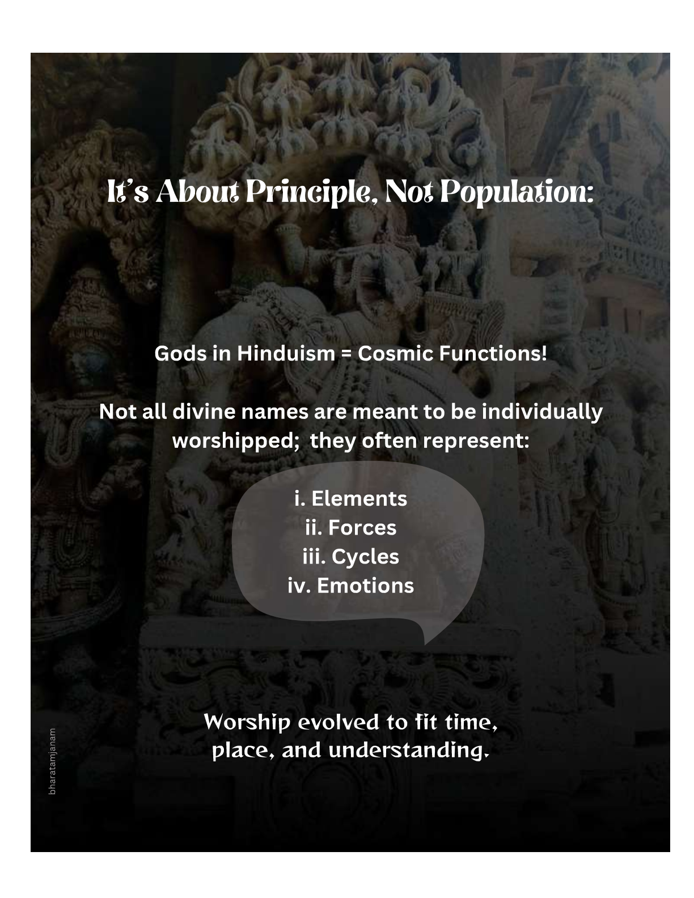
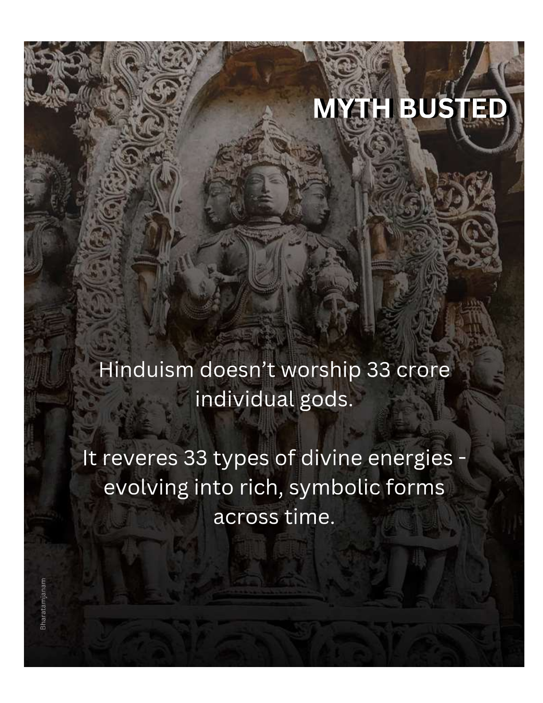
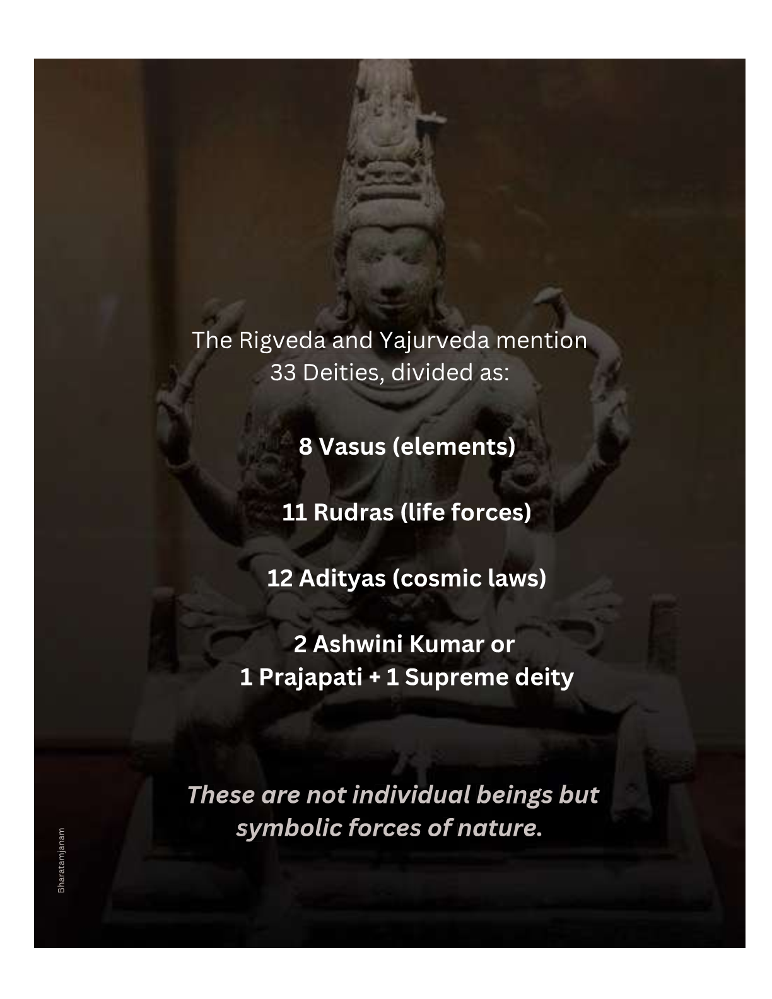
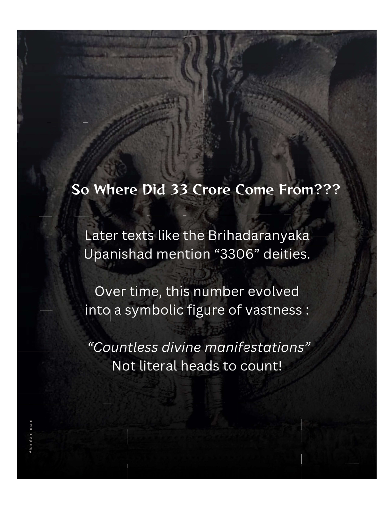

There are three schools of thoughts that explain Gods and the nature of their Godhood.
Experimental outlook of Vaisesika
Cosmological outlook of Sankhya
Metaphysical outlook of Vedanta
While each one of those deserves a special attention this work will talk about Polytheism and Pantheons.
In short, the gods are but the representations of the causal energies from which each aspect of the subtle and the visible worlds is derived. Deities should therefore be thought of as transcendent powers. Each of these manifests itself in a particular aspect of the perceptible universe, or, if we start our investigation from the perceptible end, each deity appears as a subtle entity presiding over the functioning of one aspect of the universe
“By the action of the undifferentiated air, the different notes, known as do, etc., are produced through the several holes of the flute. So, also, arising from the undifferentiated supreme Self, many states of being appear to exist.”
(Vişnu Purana 2.14.32.)

Polytheism
Hindu mythology acknowledges all gods. Since all the energies at the origin of all the forms of manifestation are but aspects of the divine power, there can exist no object, no form of existence, which is not divine in its nature. Any name, any shape, that appeals to the worshiper can be taken as a representation or manifestation of divinity.
The gods mentioned In the Vedas form only a small part of the Hindu pantheon, which gradually incorporated, and still is ready to incorporate, all the conceptions of divinity, all the gods, of all the religious groups, all new “incarnations” or representations of the supranatural powers which pervade the universe.
Vedic Pantheon
Every Hindu scripture, no matter the period or type, holds Veda as the supreme authority. Thus, we shall look at the divinities of Vedic people. To understand Vedic deities we must understand the world they inhabited. It was the beginning of settled agricultural society from a nomadic one in an area covered with unpredictable forces of forests.
“This whole world, verily, is just food and the eater of food.” (Brhad-aranyaka Upanishad 1.4.6)
Naturally, these forces of nature were given divine authority and the chief protectors became main gods. Rigveda tells us about 33 of them.
“Gods who are eleven in heaven; who are eleven on earth; And who are eleven dwelling with glory in mid-air; may ye be pleased with this our sacrifice.” (Rigveda 1.139.11)
Every text divides the amount of Gods differently yet their number and representation remains the same. This list is by no means a final verdict on a heavily debatable topic and should require the rationality of readers.
Gods in Heaven

Agni :- Fire is the greatest assistant in the progress of humanity. Early societies understood it’s importance and put Agni as the most important God, protector, guru, and mediator (between humans and Gods). All the prayers must be done first to Agni or in front of Agni.
Soma :- It is the embodiment of offering for the fire and has an equally important place. It is the substance of all that is gentle, the moon, the fuel for cosmic fire, the victim, the seed of life, the offering. He is also seen as caretaker of Chalice of Immortality.
Vayu :- The lord of the wind, Vayu, is the purifier, an explorer, messenger of the god, leader of the sacrifices. He was the first to drink ambrosia of immortality.
Dyaus :- The Sky God is one of the oldest divinity of Indo-European society. He is the Father and abode of all the gods (sun, moon, wind, rain, etc.), he covers the Earth and fertilizes her with rain.
Prithvi :- A mother goddess, depicted as cow that feeds everyone. She is the mother and abode of all visible things.
Surya :- It is envisaged under two aspects, first the physical sun is considered celestial form of Agni, secondly a God of light, warmth, knowledge, and solar energy as source of all life.
Antariksh :- Situated between Earth and Sky is the space of Antariksh, it is the abode of Vayu and Vac (speech).
Nakshatra :- It is the constellations, the stars above sun or moon. They represent the transcendental aspect of Cosmic Beings, the boundless power from which universe are born, the limit of our knowledge.
Marut :- The Immortals are restless warlike troupe of flashy young men. They are the embodiment of moral, heroic deeds and of youth. Friends of Indra and compared with war-minded societies.
Rudra :- can be translated as “howling ones”, “red ones”, “cause of tears”. They are not considered celestial aristocrat but a working class of heaven. It is the breath we take, thus becomes a principle of life, intermediary between unconscious elements and intellect. Historians debate that this was the earliest form of Lord Shiva due to similarity in names.
Indra :- The Ruler of Heaven, a list of heavenly bodies must end with its ruler. The representation of rain, storm, thunderbolt, and cause of fertility. Rigveda attributes him with highest divinity and qualities of all gods, more hymns are addressed to him than to any other deity.
Gods in Earth / Gods of Principles
Aditi :- The Primordial Vastness, the First Goddess, who is also the Devourer, that is, the Death, the Destitute, who have nothing to give. She is the boundless heaven, the endless night, the essence of divinity, the mother of all celestial beings. Gods are created from Primordial Vastness, Water and Earth (Rig Veda 10.63.2). In Vedic times, her qualities and importance is unmatched—a God worshipped by other Gods—giving her a place even above heaven, but later in Puranic tradition she is identified with the earth goddess.
Aditi gave birth to 12 Adityas that is Sovereign Principles

Mitra :- the first is human solidarity, the respect for laws and treaties, the sacredness given to all that links man to man. Friendship (Mitra) appears to have been the most important divinized virtue of the early Aryans.
Aryaman :- the quality of being virtuous. The main function of Aryaman is the maintenance of an aristocratic society and its high code of honor. Aryaman governs marriage contracts and the laws of hospitality, the rules of chivalry, the maintenance of tradition, custom, religion.
Bhaga :- stands for democratic institutions. It is the personification of an ancient Aryan custom, the annual division of property between grown-up men. The receiving of a share meant admission into full status, full membership, in the manhood of the tribe; hence the title “shareholder” (bhagavant) is a title of honor.
Varuna :- He is the ruler and judge of the invisible world. The sudden favor of the gods and the elements, their unaccountable cruelty, cannot be understood. The behavior of Varuņa, who rules over the invisible, cannot be foreseen, hence he appears a dangerous lord, a despot. Represents truth and order beyond human understanding.
Daksa :- Represents the technical ability of priests and magicians that makes ritual effective, renders contacts with gods possible. It is composed of efficiency, intelligence, imagination, precision and privilege
Amsa :- the gods’ share, represents all that is gained through luck, or accident, or war, the unexpected profit, the discovered wealth or booty, as opposed to the inherited share, which is Bhaga.
Tvastr :- the Shaper, represents the craftsmanship through which weapons are produced. The Shaper is therefore an essential aspect of security and progress. As a divinized power he is the craftsman who made the thunderbolt and the chalice of soma. Representing an art that originally belonged to pre-Aryan India
Pusan :- Pusan is the guardian of the ways; he protects animals and men from the dangers of the road. He guides men and guides the dead, finds lost things and animals: He is the god of cattle, fecundity, and herds. Worshiped by magicians, he is the patron of conjurers, especially those who discover stolen goods.
Vivasvat :- Vivasvat is the embodiment of morality, of the law of righteousness, the wise ruler of conduct handed down from the Ancestors. Dharm Shastra is attributed to him.
Savitr :- Savitr represents the magic power of utterances, also identified with the procreative power of the sun. The magic power of the word instigates men to act.
Sakra :- represents courage, the necessity of brute force of war, which brings victory, booty, power, outward security. He incarnates the victorious heroism of the warriors and the exuberance of youth. He wears the attributes of the conqueror, the attributes of a king.
Visnu :- represents the perception of cosmic law and knowledge that pervades the three worlds. He is a minor deity even among Aditya’s but people’s perception for this deity would shift giving him qualities of the preserver the ultimate God of Purana.
Gods in-between/ Other Gods

Prajapati :- He is the Lord of Progeny. A creator god formed with the union of three forms of Fire ; Surya (sun), Vayu (thunder), Agni (Earthly fire). The meditation of Prajapati in return created the worlds in Hinduism. (Chhandogya Upanishad). In Rig Veda 10.129 Prajapati is moved by desire and fear of loneliness, exerts his heat and duplicates himself, creating new worlds, gods and even humankind. This is considered the Vedic manifestation of creator-god Brahma.
Usha :- The Rig Veda portrays Usha i.e. Dawn as an always young women, she pushes darkness and awakens all beings. She moves about in a splendid chariot. She is the sister of Night, the wife of Sun, the daughter of Sky.
Asvin :- twin horse headed god of agriculture and the physician of gods. They are the giver of good health, youth, medicinal plants, abundance in food, men and goods. One is called Nastya other is called Dasra
Yama :- The God of Death, the sovereign of the infernal regions. Sinister and fearful, he judges the dead whom his messengers drag before his throne. He is the embodiment of righteousness and ultimate justice.
Citra-gupta :- The scribe of Lord of Death, instructed to write down the good and bad deeds of all living beings.
Kubera :- God of wealth, chief of spirit of Darkness. A white pot bellied dwarf with one eye, 8 teeths and three legs. An image far different form what it is used today in Hinduism.
Yaksa :- Benevolent beings living upon earth, guards the riches of kubera, precious stone and minerals stored inside Earth.
Nirrti :- a sinister goddess representing misery, disease, and death. Her images are painted on cloth and show red attributes. Her ceremonies are characterized by black garments and ornaments.
Trita :- He associates with the gods of the atmosphere, and connection with rain, water, and soma (wine). He dwells in the remotest region of the world. Trita is the bestower of long life.
Conclusion
While Rigveda talks about 33 gods ,the Brhad-aranyaka Upanishad talks about “three hundred three and three thousand three” gods totaling at 3306 and it is just one of the pantheon. Later Vedic and Puranic period also tries to define the number of Gods with “33 Kotis”. While the texts of these period probably meant it as a classification between different types of Gods. Later and in some ways even Modern Hinduism adjoins it with the number “33 crore”, it is a symbolic representation of inclusive nature in Hindu Polytheism. This boom in divine authorities comes from the Puranic Period with the formation of sects around various avatars and incarnations of The Trinity: Vishnu, Shiva and Brahma and another sect of Shakti. The Gods and Goddesses of those sects are still being worshipped today.
It would be wrong to see a change in religion or a deviation from the Vedic idea of divinity in what is merely a matter of fashion, It is a way of representing the Divine that suited a particular time or country, a particular set of habits, or a different conception of the universe. The gods are universal principles; they are all-pervading realities. The words or forms we use to represent them are mere approximations.